Wenn Sie auf das Element in der Objektverwaltung klicken, werden auch die entsprechenden Minisymbolleisten des Objekts gezeigt.
Per Standard werden Minisymbolleisten angezeigt, wenn Sie ein Objekt auswählen oder in bestimmte Schlüsselbereiche innerhalb der Seite klicken.
Um die Minisymbolleisten zu verbergen, können Sie die Aktivierung im Menü Ansicht: Minisymbolleisten aufheben.
Wenn Sie auf das Element in der Objektverwaltung klicken, werden auch die entsprechenden Minisymbolleisten des Objekts gezeigt. |
Für Gruppendiagramme können Sie die Zeichnungseigenschaften zusammen benutzerdefiniert anpassen, indem Sie die Schaltflächen auf der Registerkarte Gruppe verwenden. 
| Gruppierung aufheben |
Außerdem können Sie eine Zeichnungseigenschaft über die Schaltflächen auf der Registerkarte Einzeln benutzerdefiniert anpassen. 
Einzelner Datenpunkt
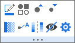
| Symbolrandfarbe | Symbolfüllfarbe | ||
| |
Symbolstil der Zeichnung | |
Symbolgröße |
| |
Symbolgröße vergrößern | Symbolgröße verkleinern | |
| Symboltransparenz | |
Datenbeschriftungen zeigen | |
| |
Ebenen festlegen | |
Farbabbildung neu skalieren |
| Farbabbildung spiegeln | |
Zeichnung kopieren Dann als neue Zeichnung in einen anderen Layer einfügen (Strg+V).
| |
| 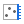 | Auf rechter Y zeichnen | |
Auf linker Y zeichnen |
| |
Bereich bearbeiten | |
Zeichnung ändern in |
| |
Angepasste Kurven
|
Auswählbar | |
| |
Datenpunkt verbergen | |
Details Zeichnung öffnen |
| Linien-/Rahmenfarbe | Liniendicke | ||
| Liniendicke vergrößern | |
Liniendicke verkleinern | |
| |
Datenbeschriftungen zeigen | |
Zum Quellblatt gehen |
| |
Zeichnung kopieren Dann als neue Zeichnung in einen anderen Layer einfügen (Strg+V).
|
X sortieren | |
| Auf rechter Y zeichnen | |
Auf linker Y zeichnen | |
| |
Bereich bearbeiten | |
Zeichnung ändern in |
| |
Angepasste Kurven
|
Auswählbar | |
| |
Details Zeichnung öffnen |
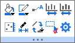
Einzelne Säule


Datentyp für Boxdiagramm: 
| |
Boxstil Klicken Sie auf diese Schaltfläche. Sie können aus der Liste den Boxstil auswählen: |
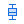 | Boxtyp Klicken Sie auf diese Schaltfläche. Sie können aus der Liste den Boxtyp auswählen: |
| Boxlinie Klicken Sie auf diese Schaltfläche. Sie können definieren, welche Boxlinie im DIagramm gezeigt wird: |
Box und Whisker Klicken Sie auf diese Schaltfläche. Sie können Box und Whisker benutzerdefiniert anpassen. | ||
| Größerer Abstand | |
Kleinerer Abstand | |
| |
Füllfarbe | Rahmenfarbe | |
| Auf rechter Y zeichnen | |
Auf linker Y zeichnen | |
| |
Bereich bearbeiten | Auswählbar | |
| |
Details Zeichnung öffnen |
Heatmap: 
Heatmap mit aufgeteilten Kacheln
2D-Fehlerbalken:

3D-Fehlerbalken:

Einzelner Datenpunkt
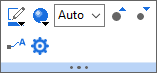

Eine Zeichnung im Diagramm:
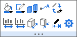
Einzelner Balken

| Mehrere Zeichnungen im Diagramm: |
|
Eine Zeichnung im 3D-Band- & Wanddiagramm:

| Mehrere Zeichnungen im 3D-Banddiagramm: |
Mehrere Zeichnungen im 3D-Wanddiagramm: |
Verschieben Sie den Cursor zu den Referenzlinien/das Muster zwischen den Referenzlinien und klicken Sie dann. Die folgende Minisymbolleiste wird angezeigt:
Das Muster zwischen den Referenzlinien 
| |
Füllfarbe | Transparenz | |
| |
Linie für Anfang zeigen | Linie für Ende zeigen | |
| |
Vordergrund (Daten) | |
Dialog Eigenschaften öffnen |
Klicken Sie auf den Bereich innerhalb des Layerrahmens, um die Minisymbolleiste für den Diagrammlayer anzuzeigen:

| |
Neu skalieren | 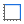 | Layerrahmen Layerrahmen zeigen/verbergen |
| 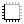 | Achsenanordnungen Klicken Sie auf diese Schaltfläche. Sie können die Achsenanordungen in der Liste auswählen: |
Hintergrundfarbe des Layers | |
| |
Andere Layer verbergen | |
Formatierung anwenden auf ... Formatierung dieses Objekt auf andere Objekte dieses Typs anwenden |
| |
Legende | Legen Sie die XY-Achsenskalierung so fest, dass sie die gleiche Länge in Pixel wie der gleiche linearisierte Skalierungsbereich hat. | |
| |
Layertitel hinzufügen | |
Diagramm hinzufügen |
| |
Datenzeichnungen zeigen Zeichnungen im Layer zeigen und verbergen |
|
Statistische Referenzlinien hinzufügen |
| |
Nur innerhalb des Rahmens | |
Wenn der Layer ein Hintergrundbild hat, klicken Sie darauf, um es in einem separaten Bildfenster zu öffnen. |
| |
Automatisch neu skalieren | Auswählbar | |
| |
Nur verfügbar, wenn das Diagramm ein Hintergrundgbild hat, das aus einem Bildfenster eingefügt wurde. Aktivieren Sie diese Option, um das Diagramm automatisch neu zu skalieren, wenn die Koordinaten des Hintergrundbilds geändert wurden. |
Dialog öffnen |

| Klicken, um die Größe des Layerrahmens zu ändern | |
Klicken, um den Layerrahmen zu drehen | |
| |
Neu skalieren | |
Ebenen zeigen/verbergen: |
| Gitternetzlinien auf folgender/n Ebene/n zeigen | |
Diagramm hinzufügen | |
| |
Zeichnungen im Layer zeigen/verbergen | 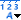 | Ausrichtung der Achsenhilfsmittel und Beschriftungen: |
| Würfelrahmen zeigen/verbergen
|
|
Automatisch neu skalieren | |
| |
Layertitel hinzufügen | Dialog öffnen |
Verschieben Sie den Cursor an den Seitenrand und klicken Sie auf den Rahmen oder in den grauen Bereich außerhalb der Diagrammseite, wenn sich der Cursor in  verwandelt. Die folgende Minisymbolleiste wird angezeigt:
verwandelt. Die folgende Minisymbolleiste wird angezeigt:
2D 
3D 
| |
Schlösser zeigen Neuberechnungsschlösser zeigen |
Analysemarkierer zeigen/verbergen | |
| |
Gitternetze zeigen |
|
Tooltipp für Datenpunkt oder Datenzeichnung umschalten |
| |
Abstände des Gitternetzes vergrößern | 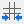 | Abstände des Gitternetzes verkleinern |
| Banner des Entwurfsmodus zeigen/verbergen | |
Layersymbole zeigen/verbergen | |
| Layer nur durch Symbole aktivieren | Nur aktiven Layer zeigen | ||
| |
Symbole für Achsen zeigen/verbergen | |
Markierung von aktivem Layer zeigen |
| |
Diagramm als Bild kopieren | |
Seitentitel hinzufügen |
| |
Diagramm von dichten Daten Datenzeichnungen als Bild im Zwischenspeicher ablegen, um schnelle Änderungen an Beschriftungen etc. zuzulassen. Diagramm aktualisieren, um Bilder zu aktualisieren. |
|
Fensteransicht |
| Layer auf Seite zentrieren | Seite an Layer anpassen Klicken Sie auf diese Schaltfläche, um den Dialog Seite an Layer anpassen zu öffnen. | ||
| |
Browserdiagramm mit wechselnder Spalte | |
Browserdiagramm mit wechselnder/m Blatt/Mappe |
| |
Layer anordnen | |
Zeichnung durch Bewegen der Maus hervorheben |
| |
Prüfen Sie die folgenden Eigenschaften, um benutzerdefinierte Anpassungen auf alle Layer anzuwenden: | Beschriftung für Layer hinzufügen Öffnen Sie den Dialog zum Hinzufügen von Beschriftungen zu Layern in einem Diagramm. | |
| |
Farben umkehren | |
Dialog Eigenschaften öffnen |
Verschieben Sie den Cursor an den Seitenrand und klicken Sie auf den Rahmen oder in den grauen Bereich außerhalb der Seite, wenn sich der Cursor in  verwandelt. Die folgende Minisymbolleiste wird angezeigt:
verwandelt. Die folgende Minisymbolleiste wird angezeigt:
| Gitternetze zeigen | Folienansicht ein-/ausschalten (Rahmen wird nicht gezeigt) | ||
| |
Abstände des Gitternetzes vergrößern | Abstände des Gitternetzes verringern | |
| |
Eingebettete Diagrammauswahl aktivieren/deaktivieren | |
Dialog Eigenschaften öffnen |
Einschließlich: Text, Anmerkung
| Schriftart festlegen |  |
Schriftgröße | |
| |
Schrift vergrößern | Schrift verkleinern | |
| |
Schriftfarbe | Fett | |
| Umbruch für Text Breite anpassen, um den Umbrucheffekt zu sehen |
|
Ausrichtung | |
| Im Uhrzeigersinn drehen | |
Gegen den Uhrzeigersinn drehen | |
| |
Formatierung anwenden auf ... Die Formatierung dieses Objekts wird auf andere Objekte diesen Typs angewendet. |
|
Verknüpfung zur Substitution |
| Auswählbar | |
Dialog Eigenschaften öffnen |

| Schriftart festlegen | |
Schriftgröße | |
| |
Schrift vergrößern | Schrift verkleinern | |
| |
Schriftfarbe | Boxbreite | |
| Fett | Umbruch für Text Breite anpassen, um den Umbrucheffekt zu sehen | ||
| Im Uhrzeigersinn drehen | |
Gegen den Uhrzeigersinn drehen | |
| |
Ausrichtung | |
Formatierung anwenden auf ... Die Formatierung dieses Objekts wird auf andere Objekte diesen Typs angewendet. |
| |
Verknüpfung zur Substitution | |
Dialog Eigenschaften öffnen |
| Schriftart festlegen | |
Schriftgröße | |
| |
Schrift vergrößern | Schrift verkleinern | |
| |
Schriftfarbe | |
Rahmen |
| |
Legende rekonstruieren | |
Übersetzungsmodus der Diagrammlegende |
| |
Umgekehrt | Horizontal anordnen | |
| |
Zeigen/Verbergen | An Zeichnungen anhängen | |
| Umbruch für Text | |
Aktiven Datensatz kennzeichnen | |
| |
Mehr |
| |
Größere Symbolbreite | |
Kleinere Symbolbreite |
| |
Punktsymbol vergrößern | Punktsymbol verkleinern | |
| Liniendicke vergrößern | |
Liniendicke verkleinern | |
| |
Größere Musterblockbreite | |
Kleinere Musterblockbreite |
| |
Größere Musterblockhöhe | Kleinere Musterblockhöhe | |
| |
Dialog Eigenschaften öffnen |
| |
Erste und letzte Ebene zeigen | |
Titel zeigen |
| |
Hauptebene +1 | |
Hauptebene -1 |
| Bereichsbeschriftung | |
Dezimalstellen | |
| |
Separates Layout | Umgekehrte Reihenfolge | |
| |
Anordnung | |
Max. & Min. Ebenen |
| |
Dialog Eigenschaften öffnen |
| Ebene hinzufügen | Ebene löschen | ||
| Größerer Symbolabstand | |
Kleinerer Symbolabstand | |
| Layout | Stellen | ||
| 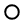 | Blasenstil | |
Titel zeigen |
| |
Dialog Eigenschaften öffnen |
| |
Linien-/Rahmenfarbe | Liniendicke | |
| Liniendicke vergrößern | |
Liniendicke verkleinern | |
| Linienstil | |
Dialog Eigenschaften öffnen | |
| |
Anfang der Pfeilform
|
|
Ende der Pfeilform |
| |
Größere Pfeilbreite | |
Kleinere Pfeilbreite |
| |
Größere Pfeillänge | |
Kleinere Pfeillänge |
| Im Uhrzeigersinn drehen | |
Gegen den Uhrzeigersinn drehen | |
| |
Pfeil auf Bogen | |
Punkte bearbeiten |
Einschließlich: Polylinie, Kurve, Freihandzeichnen, Rechteck, Kreis, Polygon und Bereich.
| |
Linien-/Rahmenfarbe | Liniendicke | |
| Liniendicke vergrößern | |
Liniendicke verkleinern | |
| |
Füllfarbe | Transparenz | |
| |
Punkte bearbeiten | Vordergrund | |
| In den Hintergrund setzen | Vorwärts | ||
| |
Rückwärts | |
Hinten (Daten) |
| Im Uhrzeigersinn drehen | |
Gegen den Uhrzeigersinn drehen | |
| |
Dialog Eigenschaften öffnen |
Klammern mit Sternchen, die über die Symbolleiste Objekt zu Diagramm hinzufügen hinzugefügt wurden, können mit Hilfe dieser Minisymbolleiste bearbeitet werden.
| |
Linien-/Rahmenfarbe | Liniendicke | |
| Liniendicke vergrößern | |
Liniendicke verkleinern | |
| |
Oben (Ausrichtung) | Unten (Ausrichtung) | |
| |
Links (Ausrichtung) | Rechts (Ausrichtung) | |
| |
Klammerntyp |
Wenn mehrere Text- oder Zeichenobjekte ausgewählt werden (nicht nur Textobjekte), können Sie diese Minisymbolleiste verwenden, um ihre Position zu steuern.
Wählen Sie mehrere nicht gruppierte Objekte aus: 
Wählen Sie mehrere gruppierte Objekte aus:
| |
Linke Ausrichtung | Rechte Ausrichtung | |
| |
Obere Ausrichtung | |
Untere Ausrichtung |
| |
Horizontal ausrichten | Vertikal ausrichten | |
| Einheitliche Breite (Rechtecke, Ellipse und UIM-Objekte) | |
Einheitliche Höhe (Rechtecke, Ellipse und UIM-Objekte) | |
| |
Horizontal verteilen | Vertikal verteilen | |
| Gruppe | Gruppierung aufheben | ||
| Vordergrund | In den Hintergrund setzen | ||
| Vorwärts | |
Rückwärts | |
| |
Hinten (Daten) |
Hinweis: Wenn Sie nur mehrere ungruppierte Textobjekte auswählen, zeigt die Minisymbolleiste:
| |
Schriftgröße | ||
| |
Schrift vergrößern | Schrift verkleinern | |
| Im Uhrzeigersinn drehen | |
Gegen den Uhrzeigersinn drehen |
| Skalierungen | |
Schriftgröße | |
| 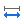 | Faktor von X-Inkrement | |
Faktor von Y-Inkrement |
| |
Schrift vergrößern | Schrift verkleinern | |
| |
Linien-/Rahmenfarbe | Liniendicke | |
| Liniendicke vergrößern | |
Liniendicke verkleinern | |
| Größere Pfeilbreite | Kleinere Pfeilbreite | ||
| |
Dialog Eigenschaften öffnen |

| |
Achsenbereich vergrößern | Achsenbereich verkleinern | |
| Scrollbereich vergrößern | Scrollbereich verkleinern | ||
| Zurücksetzen | |
Dialog Eigenschaften öffnen |

| |
Anzeigebereich festlegen | |
Auswahl entfernen |
| Daten für alle Auswahlen kopieren | |
Daten kopieren | |
| |
Daten löschen |

| 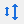 | Markierungsgröße |
| Tabellenstil | Spaltenbeschriftung | ||
| Eigenschaften in Tabelle | Headerfüllfarbe | ||
| |
Zellenfüllfarbe | Farbe für vereinte Zeile | |
| Rahmenfarbe | Rahmenbreite | ||
| Liniendicke vergrößern | |
Liniendicke verkleinern | |
| Schriftart festlegen | |
Schriftgröße | |
| |
Schrift vergrößern | Schrift verkleinern | |
| |
Schriftfarbe | Stellen |
Wenn der Cursor sich im Modus Zeiger  befindet, wählen Sie einen rechteckigen Bereich (roter Rahmen) innerhalb eines Diagrammlayers aus. Im Anschluss wird diese Minisymbolleiste gezeigt.
befindet, wählen Sie einen rechteckigen Bereich (roter Rahmen) innerhalb eines Diagrammlayers aus. Im Anschluss wird diese Minisymbolleiste gezeigt.
| |
Achsenskalierung vergrößern | |
In separater Grafik vergrößern |
Gehen Sie zur letzten Spalte im aktuellen Arbeitsblatt, verschieben Sie den Cursor an den Rand des Arbeitsblatts und klicken Sie auf den grauen Bereich, wenn der Cursor in  verwandelt wird. Die folgende Minisymbolleiste wird angezeigt:
verwandelt wird. Die folgende Minisymbolleiste wird angezeigt:

| |
Spalten zeigen | Spaltenlistenansicht | |
| |
Show Formulas.png | Kategorienindizes zeigen | |
| |
Vereinte Zeilen einschalten | |
Dialog Farbe der vereinten Zeilen im Arbeitsblatt öffnen Nur verfügbar, wenn vereinte Zeilen eingeschaltet ist. |
| Verwenden Sie das Untermenü, um Formate (Fett, Füllfarbe etc.), Inhalte, eingefügte Notizen oder alles obenstehende im Arbeitsblatt zu löschen. | |
Spalte hinzufügen | |
| |
Einfachen Dialog für Suche im Arbeitsblatt öffnen | |
Dialog Blattnotizen öffnen, um Kommentare und Reiterfarben zum aktuellen Blatt hinzuzufügen. |
| |
Dialog Optionen für Blattschutz öffnen | Dialog Eigenschaften öffnen | |
| 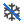 | Fixierung im Arbeitsblatt aufheben |
Klicken Sie auf den Spaltenheader, um die Spalte auszuwählen. Die folgende Minisymbolleiste wird angezeigt:
| Text | Text & Numerisch, Numerisch |
 |
 |
| Datum | Zeit |
 |
|
| Farbe | |
| 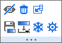 |
| Spalte(n) verbergen | Alle zeigen durch Neuskalieren | ||
| Arbeitsblatt aufsteigend sortieren | |
Suchen | |
| |
Sparklines hinzufügen | Kategorial | |
| |
Abtastintervall Ersten X-Wert und Inkrement des X-Werts festlegen, so dass eine separate X-Spalte nicht notwendig ist. |
|
Zum Zeichnen kopieren |
| |
Löschen | |
Einfügen |
| |
Als X setzen | Als Y setzen | |
| Als Z setzen | |||
| Als X-Fehler setzen | Als Y-Fehler setzen | ||
| Als Spalte ignorieren setzen | Stellen | ||
| Datum | Zeit | ||
| |
Wraparound-Zeit festlegen | ||
| Als Inkrementliste speichern | |
Farbe laden | |
| |
Die ausgewählte Spalte fixieren | Fixierung aufheben | |
| |
Bereich mit Name definieren | |
Spalteneigenschaften öffnen |
Drücken Sie die linke Maustaste, um die erste Spalte auszuwählen, und ziehen Sie per Drag&Drop, um mehrere Spalten auszuwählen. Die folgende Minisymbolleiste wird angezeigt:
| Spalten verbergen | Alle zeigen durch Neuskalieren | ||
| |
Suchen | |
Sparklines hinzufügen |
| Kategorial | |
Abtastintervall Ersten X-Wert und Inkrement des X-Werts festlegen, so dass eine separate X-Spalte nicht notwendig ist. | |
| |
Zum Zeichnen kopieren |
Klicken Sie auf den Zeilenheader, um die Zeile auszuwählen. Die folgende Minisymbolleiste wird angezeigt:

| Verbergen | |
Zeile zeigen | |
| |
Daten maskieren/demaskieren | |
Löschen |
| |
Die ausgewählte Zeile fixieren | Fixierung aufheben | |
| Zu Langname verschieben | Zu Einheiten verschieben | ||
| |
Zu Kommentaren verschieben | Zu benutzerdefinierter Beschriftung verschieben | |
| |
Einfügen | |
Alle Datenzeilen vor der ausgewählten Zeile löschen |
| |
Ausgewählte Zeile nach oben verschieben | |
Ausgewählte Zeile nach unten verschieben |
| Verfügbar, wenn eine Zeile im Ergebnisblatt (DescStatsQuantities) von Statistik für gesamtes Blatt ausgewählt ist. Klicken Sie auf diese Schaltfläche, um ein Boxdiagramm aus der Quelldatenspalte der ausgewählten Zeile zu erstellen. | Verfügbar, wenn eine Zeile im Ergebnisblatt (DescStatsQuantities) von Statistik für gesamtes Blatt ausgewählt ist. Klicken Sie auf diese Schaltfläche, um ein Histogramm aus der Quelldatenspalte der ausgewählten Zeile zu erstellen. | ||
| 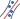 | Verfügbar, wenn eine Zeile im Ergebnisblatt (DescStatsQuantities) von Statistik für gesamtes Blatt ausgewählt ist. Klicken Sie auf diese Schaltfläche, um ein P-P-Diagramm aus der Quelldatenspalte der ausgewählten Zeile zu erstellen. |
Drücken Sie die linke Maustaste, um die erste Zeile auszuwählen, und ziehen Sie per Drag&Drop, um mehrere Zeilen auszuwählen. Die folgende Minisymbolleiste wird angezeigt:
| Verbergen | |
Zeile zeigen | |
| |
Daten maskieren/demaskieren | |
Löschen |
| |
Die ausgewählte Zeile fixieren | Fixierung aufheben | |
| |
Einfügen | |
Alle Datenzeilen vor der ausgewählten Zeile löschen |
| |
Ausgewählte Zeilen nach oben verschieben | |
Ausgewählte Zeilen nach unten verschieben |
| Verfügbar, wenn Zeilen im Ergebnisblatt (DescStatsQuantities) von Statistik für gesamtes Blatt ausgewählt ist. Klicken Sie auf diese Schaltfläche, um ein Boxdiagramm aus der Quelldatenspalte der ausgewählten Zeilen zu erstellen. | Verfügbar, wenn Zeilen im Ergebnisblatt (DescStatsQuantities) von Statistik für gesamtes Blatt ausgewählt ist. Klicken Sie auf diese Schaltfläche, um ein Histogramm aus der Quelldatenspalte der ausgewählten Zeilen zu erstellen. |
Klicken Sie auf die einzelne Zelle mit Wert. Die folgende Minisymbolleiste wird angezeigt:
Zelle enthält Daten 
Zelle enthält Bild 
Zelle in Farbspalte
| |
Daten maskieren/demaskieren | |
Auswahl bis zur letzten Datenzeile erweitern |
| Zeilen vor der ausgewählten Zelle löschen. Verfügbar, wenn die ausgewählte Zelle sich nicht in der ersten Zeile befindet. | |
Bereich mit Name definieren | |
| |
Notiz einfügen Hinweis: Eine in eine Arbeitszelle eingefügte Notiz unterstützt die Syntax Origin Rich Text und wird als Rendermodus angezeigt. |
|
Notiz in einem separaten Notizfenster öffnen |
| LaTeX-Gleichung einfügen | |
Als Bild kopieren | |
| |
Bereiche fixieren | Fixierung aufheben | |
| Neue Farbe auswählen | Farbe bearbeiten Klicken Sie diese Schaltfläche, um den Standarddialog Farbe zu öffnen. | ||
| Verwenden Sie das Untermenü, um Formate (Fett, Füllfarbe etc.), Inhalte, eingefügte Notizen oder alles obenstehende im Arbeitsblatt zu löschen. |
Mehrere Zellen in einer Spalte markieren:
Mehrere Zellen in mehreren Spalten markieren:
| |
Daten maskieren/demaskieren | |
Zum Zeichnen kopieren |
| |
Auswahl bis zur letzten Datenzeile erweitern | Zeilen vor der ausgewählten Zelle löschen. Verfügbar, wenn die ausgewählte Zelle sich nicht in der ersten Zeile befindet. | |
| |
Bereiche fixieren | Fixierung aufheben | |
| Verwenden Sie das Untermenü, um Formate (Fett, Füllfarbe etc.), Inhalte, eingefügte Notizen oder alles obenstehende im Arbeitsblatt zu löschen. |
Klicken Sie auf den Zeilenheader der Beschriftungszeile. Die folgende Minisymbolleiste wird angezeigt:

Wenn Beschriftungszeile = Langname ausgewählt ist, wird diese Symbolleiste gezeigt:

| |
Rich Text | Anwenderparameter einfügen | |
| Die ausgewählte Zeile der Anwenderparameter (einschließlich ggf. der Formel) wird auf andere Blätter angewendet. | Verbergen | ||
| |
Zeile nach oben verschieben | |
Zeile nach unten verschieben |
| Umbruch für Text Breite & Höhe anpassen, um den Umbrucheffekt zu sehen |
Einheiten aus Langname extrahieren ... | ||
| Ausgewählte Beschriftungszeile als kategorical festlegen | Verwenden Sie das Untermenü, um Formate (Fett, Füllfarbe etc.), Inhalte, eingefügte Notizen oder alles obenstehende im Arbeitsblatt zu löschen. | ||
| |
Dialog Eigenschaften öffnen |

| |
Füllfarbe | Farbe für vereinte Zeile | |
| |
Rahmendicke | |
Gitternetze zeigen
|
| Gitternetzliniendicke | |
Gitternetzlinienfarbe | |
| Dickere Gitternetzlinie | |
Dünnere Gitternetzlinie | |
| Rahmenfarbe | |||
|
Schriftgröße | |
Schriftfarbe |
| |
Schrift vergrößern | Schrift verkleinern | |
| Update des Arbeitsblatts |
Klicken Sie auf die obere linke Ecke der Matrix, um das gesamte Matrixobjekt zu markieren. Die folgende Minisymbolleiste wird angezeigt:

| Füllfarbpalette für die Miniaturbilder. Verfügbar, wenn die Bildauswahl eingeschaltet ist. |
|
Fehlende Wertfarbe. Verfügbar, wenn die Bildauswahl eingeschaltet ist. | |
| Farbabbildung spiegeln Verfügbar, wenn die Bildauswahl eingeschaltet ist. |
|||
| X/Y zeigen | |
Bild anzeigen | |
| |
Bildauswahl | Schieber oder Miniaturbilder | |
| |
Daten löschen | |
Zum Zeichnen kopieren |
| |
Dialog Blattnotizen öffnen, um Notizen und Reiterfarben zum aktuellen Blatt hinzuzufügen. | |
Dialog Neuer Name öffnen, um einen Bereich zu definieren. |
| |
Zeige Organizer | |
Dialog Eigenschaften öffnen |
Verschieben Sie den Cursor an den Seitenrand und klicken Sie auf den Rahmen oder in den grauen Bereich außerhalb der Seite, wenn sich der Cursor in  verwandelt. Die folgende Minisymbolleiste wird angezeigt:
verwandelt. Die folgende Minisymbolleiste wird angezeigt:
Bild mit einzelnem Frame 
Video 
Gestapeltes Bild mit mehreren Frames 
| Ein ROI-Feld wird zum Bild hinzugefügt. | |
Durch Aktivieren wird die tatsächliche Bildgröße gezeigt. Durch Deaktivieren wird das Bild an die Seitengröße angepasst. | |
| |
Die fehlenden Werte werden mit der ausgewählten Farbe gefüllt. Nur verfügbar, wenn das Bild fehlende Werte hat. | |
Klicken Sie, um einen Dialog zu öffnen und den Schieber zu verwenden, um die graustufige Anzeige festzulegen. Nur verfügbar für graustufige Bilder mit z1 und z2. Einzelheiten lesen Sie auf dieser Seite. Hinweis: Man kann auch folgenden LabTalk-Befehl ausführen, um den Dialog zu öffnen. run.section(imgfile,grayslider); |
| |
Bild horizontal spiegeln | |
Bild vertikal spiegeln |
| Bild um 90 Grad im Uhrzeigersinn drehen | Wählen Sie aus den folgenden 4 Navigationsmethoden: | ||
| Bild im Uhrzeigersinn drehen. Das Inkrementgrad wird mit @IMGR bestimmt. | |
Bild gegen den Uhrzeigersinn drehen. Das Inkrementgrad wird mit @IMGR bestimmt. | |
| |
Farbbild in Bild mit Graustufen umwandeln | |
Die angewendete Palette revidieren |
| |
Öffnen Sie den Dialog cvgraymax, um den graustufigen Anzeigebereich festzulegen. Nur für graustufige Bilder verfügbar. | |
Der graustufige Bereich wird auf die ursprünglichen Werte zurückgesetzt. Datenmarkierungen |
Beim Öffnen der Datenmarkierung wird diese Minisymbolleiste in der oberen rechten Ecke des Diagramm- oder des Arbeitsmappenfensters gezeigt.
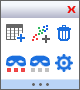
| Teildatensatzblatt erstellen | |
Kategorien erstellen | |
| |
Markierte Punkte maskieren/demaskieren | |
Abgeblendete Punkte maskieren/demaskieren |
| |
Punkte löschen | |
Dialog Eigenschaften öffnen |
Klicken Sie auf die Ordnernamen im Projekt Explorer, um diese Minisymbolleiste aufzurufen: 
| |
Ordnernotizen | |
Duplikatsordner |
| |
Dialog Ordnereigenschaften öffnen |
Einige Schaltflächen auf der Minisymbolleiste vergrößern oder verringern Eigenschaften um ein Inkrement jedes Mal, wenn Sie auf die Schaltfläche klicken (z. B. Schriftgröße des Textes). Mit den folgenden LabTalk-Systemvariablen steuern Sie das Inkrementieren:
Sie können den Inkrementwert einer besonderen Schaltfläche überprüfen, indem Sie den Cursor darüber bewegen. Die Statusleiste meldet das aktuelle Inkrement und die LabTalk-Systemvariable, die Sie modifizieren können, um das Inkrement zu ändern.

Informationen zum Ändern des Wert einer LabTalk-Systemvariablen finden Sie unter FAQ-708 Wie ändere ich permanent den Wert einer Systemvariablen?.
| Objekt | Schaltflächen der Minisymbolleiste | Systemvariable | Standardinkrement |
|---|---|---|---|
| Symbolgröße |  |
@INCSS | 1 |
| Liniendicke |  |
@INCLT | 1 |
| Schriftgröße | @INCFS | 1 | |
| Drehung der Hilfsstrichsbeschriftung | @INCTLR | 15 | |
| Drehung der Textobjekte | @INCTOR | 90 | |
| Drehung der Diagrammobjekte |  |
@INCGOR | 45 |
| Hilfsstrichslänge | 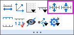 | @INCTL | 1 |
| Drehung des Kreises |  |
@INCPR | 10 |
| Größe des Ringlochs | 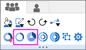 | @INCDHS | 5 |
| Abstand der Lücke (Säulen, Ring, Box) |  (Beispiel zum Ringdiagramm) |
@INCSG | 5 |
| Unterbrechungslänge |  |
@INCBL | 1 |
| Unterbrechungsabstand |  |
@INCBG | 15 |